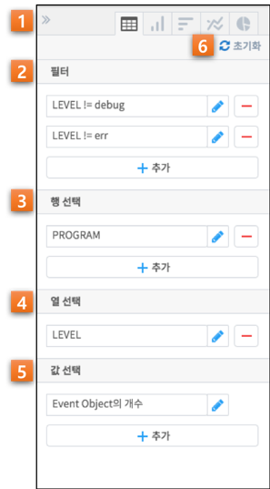
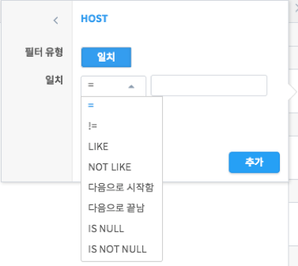
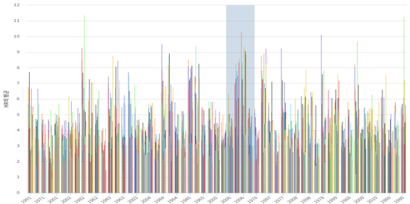

피벗 작업은 시각화 유형에 따라 설정이 조금씩 달라집니다. 예를 들어, 유형: 테이블의 경우에는 행 선택과 값 선택을 여러 개 지정할 수 있지만, 유형: 꺾은선형에서는 x축과 y축 각 1개씩만 지정할 수 있습니다.
피벗 설정하기: 테이블

| 번호 |
구분 |
설명 |
| 1 |
요소 숨기기 |
피벗 설정 영역을 숨기거나 다시 보이게할 수 있는 버튼입니다. |
| 2 |
필터 |
사용자는 필터를 사용하여 피벗 실행의 대상이 되는 데이터의 범위를 제한할 수 있습니다. 사용자는 특정 필드의 값의 범위를 설정함으로써, 피벗 실행의 대상이 되는 데이터를 제한하게 됩니다. [예시1] |
| 3 |
행 선택 |
사용자는 피벗 실행의 결과로 출력될 데이터를 행 단위로 그룹핑하기 위하여 그룹핑할 필드를 지정할 수 있습니다. [예시2] |
| 4 |
열 선택 |
사용자는 피벗 실행의 결과로 출력될 데이터의 각 열에 해당되는 필드를 지정할 수 있습니다. [예시3] |
| 5 |
값 선택 |
사용자는 피벗 실행의 결과로 각 열에 출력할 값을 설정할 수 있습니다. [예시4] |
| 6 |
초기화 버튼 |
필터, 행, 열, 값 등 모든 피벗 설정을 초기화합니다. |
| [예시1] | 예를 들어, 인터넷 서비스 로그에서 서비스 실패 원인을 분석하기 위하여, 서비스가 성공한 로그는 분석 대상에서 제외하고자 할 경우, cause 필드의 값으로 ‘fail’이 포함된 로그로 필터를 설정할 수 있습니다. 필터 항목은 선택 사항이므로, 사용자가 필터를 설정하지 않으면 전체 데이터에 대하여 피벗이 실행됩니다. |
| [예시2] | 예를 들어, userID별로 그룹핑된 데이터를 출력하고자 할 경우, “행 선택”에서 userID를 선택하면 됩니다. “행 선택” 항목은 선택 사항이므로, 사용자가 행 선택을 설정하지 않으면 전체 데이터를 하나의 그룹으로 피벗이 실행됩니다. |
| [예시3] | 예를 들어, systemID별로 에러 발생 빈도를 분석하고자 할 경우, “열 선택”에서 systemID 필드를 선택합니다. 이 경우, 각 열에 systemID별 에러 발생 빈도가 피벗 실행의 결과로 출력됩니다. 이때, 에러 발생 빈도는 아래 “값 선택”에서 설정합니다. “열 선택” 항목은 선택 사항이므로, 사용자가 열 선택을 설정하지 않으면 아래에 기술한 “값 선택”에서 설정한 조건에 따른 결과가 출력됩니다. |
| [예시4] | 예를 들어, 특정 필드의 이벤트 수, 평균 값, 최대/최소값, 표준편차, 중간값 등을 설정할 수 있습니다. 사용자가 “값 선택”을 설정하지 않을 경우, 이벤트 수(Event Object의 개수)가 default로 출력됩니다. |
피벗 테이블을 설정하고 실행하는 절차는 다음과 같습니다.
- 필터(선택항목): 사용자는 “필터” 항목에서 필터 조건을 설정할 수 있습니다. 먼저, “추가” 버튼을 클릭하면, 필드 리스트가 오픈 됩니다. 필드 리스트는 아래와 같이 필드 유형과 필드 명으로 구성되어 있습니다.

오픈된 필드 리스트 중에서 필터 하고자 하는 필드를 선택하면, 선택한 필드의 유형에 따라 아래와 같은 필터 설정 popup이 오픈 되고, 리스트 박스에서 필터의 일치 조건을 선택할 수 있습니다. 아래 popup에서, 필드의 타입에 따라 아래와 같이 선택할 수 있는 일치 조건이 달라집니다. (좌측: 문자형, 우측: 숫자형)


| 필드 유형 |
필터 일치 조건 |
| 문자형 |
- =: 해당 필드 값이 일치 조건 입력란에 입력한 값과 일치하는 데이터를 피벗 실행의 대상으로 제한합니다. [예시5]
- !=: 해당 필드 값이 입력한 값이 아닌 데이터를 피벗 실행의 대상으로 제한할 경우에 사용합니다.
- LIKE: 해당 필드 값이 입력한 값을 포함하는 데이터를 피벗 실행의 대상으로 제한할 경우에 사용합니다.
- NOT LIKE: 해당 필드 값이 입력한 값을 포함하지 않는 데이터를 피벗 실행의 대상으로 제한할 경우에 사용합니다.
- 다음으로 시작함: 해당 필드 값이 입력한 값으로 시작하는 데이터를 피벗 실행의 대상으로 제한할 경우에 사용합니다.
- 다음으로 끝남: 해당 필드 값이 입력한 값으로 끝나는 데이터를 피벗 실행의 대상으로 제한할 경우에 사용합니다.
- IS NULL: 해당 필드 값이 Null인 데이터를 피벗 실행의 대상으로 제한할 경우에 사용합니다.
- IS NOT NULL: 해당 필드 값이 Null이 아닌 데이터를 피벗 실행의 대상으로 제한할 경우에 사용합니다.
|
| 숫자형 |
- =: 해당 필드 값이 일치 조건 입력란에 입력한 값(숫자)과 일치하는 데이터를 피벗 실행의 대상으로 제한합니다. [예시6]
- !=: 해당 필드 값이 입력한 값(숫자)이 아닌 데이터를 피벗 실행의 대상으로 제한할 경우에 사용합니다.
- <=: 해당 필드 값이 입력한 값(숫자)보다 작거나 같은 데이터를 피벗 실행의 대상으로 제한할 경우에 사용합니다.
- <: 해당 필드 값이 입력한 값(숫자)보다 작은 데이터를 피벗 실행의 대상으로 제한할 경우에 사용합니다.
- >=: 해당 필드 값이 입력한 값(숫자)보다 크거나 같은 데이터를 피벗 실행의 대상으로 제한할 경우에 사용합니다.
- >: 해당 필드 값이 입력한 값(숫자)보다 큰 데이터를 피벗 실행의 대상으로 제한할 경우에 사용합니다.
- IS NULL: 해당 필드 값이 Null인 데이터를 피벗 실행의 대상으로 제한할 경우에 사용합니다.
- IS NOT NULL: 해당 필드 값이 Null이 아닌 데이터를 피벗 실행의 대상으로 제한할 경우에 사용합니다.
|
| [예시5] | 예를 들어, TEAMID 필드의 일치 조건으로 “은(는) 다음입니다.”을 선택하고, 일치 값으로 SF를 입력하면, TEAMID = ‘SF’인 데이터에 대하여 피벗을 실행합니다. |
| [예시6] | 예를 들어, YEARID 필드의 일치 조건으로 ‘=’을 선택하고, 일치 값으로 2020을 입력하면, YEARID = 2020인 데이터에 대하여 피벗을 실행합니다. |
만일, 필터를 설정하지 않고 필터 설정 popup을 닫고자 할 경우에는 피벗 화면의 빈 공간을 클릭합니다. 만일, 열려있는 필터 설정 popup에서 필터를 설정하지 않고 다른 필드를 선택하고자 할 경우에는 필드명 좌측의 “<” 버튼을 클릭합니다.
필터 설정 popup에서 필터 조건을 선택하고 필터 값을 입력하여 “추가” 버튼을 클릭하면 필터 조건의 설정이 완료됩니다.
특정 필드에 대하여 필터 조건을 설정한 후, 추가로 다른 필드에 대한 필터를 설정하고자 할 경우, 사용자는 “추가” 버튼을 클릭하여 다중 필터를 설정할 수 있습니다. 기 설정된 필터 조건을 수정하고자 할 경우, 사용자는 기 설정된 필터 조건 우측의 “수정” 버튼을 클릭하여 설정된 필터 조건의 내용을 수정한 후 “업데이트” 버튼을 클릭하면 됩니다. 또한, 필터 조건 우측의 “제거” 버튼을 클릭하여 기 설정된 필터 조건을 삭제할 수 있습니다.
2. 행 선택(선택 항목): 사용자는 출력될 데이터를 특정 필드별로 그룹핑할 수 있습니다. 사용자가 “행 선택”에서 특정 필드를 선택하면, 피벗 실행의 결과로 출력되는 각 행은 해당 필드별로 그룹핑됩니다. 사용자가 “추가” 버튼을 클릭하면, 그룹핑할 필드를 선택할 수 있는 필드 리스트가 오픈 됩니다.
필드 리스트에서 “행 선택”의 방법은 선택한 필드의 유형에 따라 달라지게 됩니다. 먼저, 시간 필드를 설정하고자 할 경우, 필드 리스트에서 시간 필드에 해당하는 필드(ex) DATETIME)를 선택하여 오픈된 popup에서 아래 항목을 설정한 후 “추가” 버튼을 클릭합니다.
| 설정 항목 |
설명 |
| 단위 |
- 사용자는 이벤트가 발생한 시각 단위로 데이터를 그룹핑할 수 있습니다.
- 이벤트의 시각 단위는 1년, 1개월, 1일, 1시간, 1분, 10분, 1초 중에서 선택 가능합니다. [예시7]
- “단위” 항목은 시간 필드 설정을 위한 필수 항목이며, Default은 ‘1시간’ 입니다.
|
| 정렬 |
- 그룹핑되어 출력되는 데이터를 어떻게 정렬할 것인지를 아래와 같이 지정할 수 있습니다. Default는 ‘기본값’입니다.
- 기본값: IRIS DB에 저장된 순서로 출력됩니다.
- 오름차순: 출력될 데이터를 시각 단위 오름차순으로 정렬합니다.
- 내림차순: 출력될 데이터를 시각 단위 내림차순으로 정렬합니다.
|
| [예시7] | 예를 들어, 사용자가 데이터를 시간 단위로 그룹핑하고자 할 경우, ‘1시간’을 선택합니다. |
필드 리스트에서 특정 필드를 선택할 경우, 해당 필드의 유형에 따라 아래와 같이 설정 항목이 달라집니다. 사용자는 아래 항목을 설정한 후 “추가” 버튼을 클릭합니다.
| 필드 유형 |
설정 항목 |
설명 |
|---|
| 문자형 |
정렬 |
- 행 단위로 그룹핑되어 출력되는 데이터를 어떻게 정렬할 것인지를 지정할 수 있습니다. Default는 ‘기본값’입니다.
- 기본값: IRIS DB에 저장된 순서로 출력됩니다.
- 오름차순: 출력될 데이터를 해당 필드 값의 알파벳 단위 오름차순으로 정렬합니다.
- 내림차순: 출력될 데이터를 해당 필드 값의 알파벳 단위 내림차순으로 정렬합니다.
|
| 최대 행 수 |
- 사용자는 피벗 테이블 실행 결과로 화면에 출력될 데이터 목록의 최대 행 수를 지정할 수 있습니다. 피벗 테이블 실행 결과, 너무 많은 데이터가 출력되면, 오히려 사용자가 분석하는데 불편을 겪을 수 있으므로, 효율적인 분석을 위한 최소한의 데이터로 피벗 실행결과의 출력을 제한하는 것입니다.
- Default는 ‘500’으로 설정되어 있습니다. 즉, 화면에 출력될 데이터 목록은 최대 500 라인이며, 500 라인 이후의 데이터 목록은 출력되지 않습니다.
|
| 숫자형 |
범위 만들기 |
- 숫자형 필드의 경우, 피벗 실행결과로 출력되는 각 열을 필드 값의 개별 숫자별로 표현할 것인지, 일정 범위를 지정하여 표현할 것인지 여부를 묻는 항목입니다. [예시8]
- 범위를 지정하고자 할 경우, “예” 버튼을 클릭하여 아래와 같이 연계된 항목들을 설정할 수 있습니다. 범위를 지정하지 않는 경우, “아니오” 버튼을 클릭합니다.
|
| 범위 크기 |
- “범위 만들기” 항목에서 필드 값의 범위를 지정할 경우에 설정합니다.
- 사용자는 해당 필드 값을 그룹핑할 범위의 크기를 지정할 수 있습니다. [예시9]
|
| 범위 시작 |
- “범위 만들기” 항목에서 필드 값의 범위를 지정할 경우에 설정합니다.
- 해당 필드 값을 그룹핑하는 경우, 범위가 시작되는 값을 지정합니다. [예시10]
|
| 범위 끝 |
- “범위 만들기” 항목에서 필드 값의 범위를 지정할 경우에 설정합니다. 해당 필드 값을 그룹핑하는 경우, 범위의 마지막 값을 지정합니다. [예시11]
|
| 정렬 |
- 그룹핑되어 출력되는 데이터를 어떻게 정렬할 것인지를 지정할 수 있습니다. Default는 ‘기본값’으로 설정되어 있습니다.
- 기본값: IRIS DB에 저장된 순서로 출력됩니다.
- 오름차순: 출력될 데이터를 숫자 단위 오름차순으로 정렬합니다.
- 내림차순: 출력될 데이터를 숫자 단위 내림차순으로 정렬합니다.
|
| 최대 행 수 |
- 사용자는 피벗 테이블 실행 결과로 화면에 출력될 데이터 목록의 최대 행 수를 지정할 수 있습니다. 피벗 테이블 실행 결과, 너무 많은 데이터가 출력되면, 오히려 사용자가 분석하는데 불편을 겪을 수 있으므로, 효율적인 분석을 위한 최소한의 데이터로 피벗 실행결과의 출력을 제한하는 것입니다.
- Default는 ‘500’으로 설정되어 있습니다. 즉, 화면에 출력될 데이터 목록은 최대 500 라인이며, 500 라인 이후의 데이터 목록은 출력되지 않습니다.
|
| [예시8] | 예를 들어, 특정 필드의 값이 12~19, 22~27, 29, 50, 77, 400~409 인 경우, 범위를 지정하지 않으면 12, 13, …, 77, 400, …, 409 등 27개의 열이 출력되지만, 범위의 크기를 10단위로 지정하면 5개의 열(12~19, 22~29, 50, 77, 400~409)로 그룹핑되어 출력됩니다. |
| [예시9] | 예를 들어, YEARID라는 필드 값이 1951, 1952,…., 2015, 2016 등 연속되는 각 연도별로 구분되어 있는 경우, 범위의 크기를 20으로 지정하면 1951~1970, 1971~1990, … 등 20년 마다 하나의 범위로 설정됩니다. |
| [예시10] | 예를 들어, 상기의 “범위 크기”의 예에서, 범위의 시작을 1960으로 지정하면 1960년부터 20년 마다 하나의 범위로 설정됩니다. |
| [예시11] | 예를 들어, 상기의 “범위 크기”의 예에서, 범위의 끝을 2000으로 지정하면 1951년부터 2000년까지 20년 마다 하나의 범위로 설정됩니다. |
특정 필드에 대하여 설정을 완료한 후, 추가로 다른 필드에 대하여 설정하고자 할 경우, 사용자는 “추가” 버튼을 클릭하여 추가 설정할 수 있습니다. 기 설정된 조건을 수정하고자 할 경우, 사용자는 기 설정된 조건 우측의 “수정” 버튼을 클릭하여 설정된 필터 조건의 내용을 수정한 후 “업데이트” 버튼을 클릭하면 됩니다. 또한, 각 조건 우측의 “제거” 버튼을 클릭하여 기 설정된 조건을 삭제할 수 있습니다.
3. 열 선택(선택 항목): 사용자는 출력될 결과의 열에 해당되는 필드를 설정할 수 있습니다. 사용자가 “추가” 버튼을 클릭하면, 출력될 열로 지정할 필드를 선택할 수 있는 필드 리스트가 오픈 됩니다.
필드 리스트에서 특정 필드를 선택할 경우, 해당 필드의 유형에 관계없이 최대 열 수를 설정합니다. 사용자는 아래 항목을 설정한 후 “추가” 버튼을 클릭합니다.
| 필드 유형 |
설정 항목 |
설명 |
|---|
| 모든 유형 |
최대 열 수 |
- 사용자는 피벗 테이블 실행 결과로 화면에 출력될 데이터 목록의 열의 최대수를 지정할 수 있습니다. 피벗 테이블 실행 결과, 너무 많은 데이터가 출력되면, 오히려 사용자가 분석하는데 불편을 겪을 수 있으므로, 효율적인 분석을 위한 최소한의 데이터로 피벗 실행결과의 출력을 제한하는 것입니다.
- Default는 ‘500’으로 설정되어 있습니다. 즉, 화면에 출력될 특정 필드의 열이 최대 500 열이며, 500 열 이후의 데이터는 출력되지 않습니다.
|
“열 선택”의 경우, 하나의 필드만 설정할 수 있습니다. 기 설정된 조건을 수정하고자 할 경우, 사용자는 기 설정된 조건을 수정하고자 할 경우, 사용자는 기 설정된 조건 우측의 “수정” 버튼을 클릭하여 설정된 필터 조건의 내용을 수정한 후 “업데이트” 버튼을 클릭하면 됩니다. 또한, 각 조건 우측의 “제거” 버튼을 클릭하여 기 설정된 조건을 삭제할 수 있습니다.
4. 값 선택: 사용자는 출력될 결과값을 설정할 수 있습니다. “값 선택”에는 default로 이벤트 개수(Event Object의 개수)가 설정되어 있으며, 사용자는 추가로 특정 필드에 대한 피벗 실행 결과 값을 설정할 수 있습니다. 이벤트 개수(Event Object의 개수) 외에, 추가로 특정 필드에 대한 피벗 실행 결과값을 설정하기 위하여 “추가” 버튼을 클릭하면, 아래와 같이 필드 리스트가 오픈 됩니다.
만일, 사용자가 위의 리스트 중 특정 필드를 선택할 경우, 각 필드별 결과값 설정은 필드의 유형에 따라 달라집니다. 아래는 필드 유형별 결과값 설정에 대한 설명입니다.
| 필드 유형 |
설정 항목 |
설명 |
| 시간형 |
값 |
- 피벗 실행 결과로 출력될 해당 필드의 첫 번째 값, 마지막 값, 또는 출력되는 필드 값의 개수를 지정할 수 있습니다.
- 시작: 출력되는 특정 필드의 값 중, 첫번째 시간 값만 출력합니다.
- 종료: 출력되는 특정 필드의 값 중, 마지막 시간 값만 출력합니다.
- 데이터 개수: 출력되는 특정 필드의 값의 개수만 출력됩니다.
|
| 문자형 |
값 |
- 피벗 실행 결과로 출력될 해당 필드의 첫 번째 값, 마지막 값, 또는 출력되는 필드 값의 개수를 지정할 수 있습니다.
- 첫 번째 값: 출력되는 특정 필드의 값 중, 첫 번째 값만 출력합니다.
- 마지막 값: 출력되는 특정 필드의 값 중, 마지막 값만 출력합니다.
- 개수: 출력되는 특정 필드의 값의 개수만 출력됩니다.
|
| 숫자형 |
값 |
- 피벗 실행 결과로 출력될 해당 필드의 통계 항목을 지정할 수 있습니다.
- 합계: 통계 대상 이벤트에 대하여, 해당 필드 값의 합계 산출
- 개수: 통계 대상 이벤트의 개수 산출
- 평균: 통계 대상 이벤트에 대하여, 해당 필드 값의 평균값 산출
- 최대: 통계 대상 이벤트에 대하여, 해당 필드 값의 최대값 산출
- 최소: 통계 대상 이벤트에 대하여, 해당 필드 값의 최소값 산출
- 표준 편차: 통계 대상 이벤트에 대하여, 해당 필드 값의 표준편차 산출
- 중간값: 통계 대상 이벤트에 대하여, 해당 필드 값의 중간값 산출
|
특정 필드에 대한 값 산출을 설정하고 “추가” 버튼을 클릭하여 설정을 완료합니다. 추가로 다른 필드에 대하여 설정하고자 할 경우, 사용자는 “추가” 버튼을 클릭하여 추가 설정할 수 있습니다. 기 설정된 조건을 수정하고자 할 경우, 사용자는 기 설정된 조건 우측의 “수정” 버튼을 클릭하여 설정된 조건의 내용을 수정한 후 “업데이트” 버튼을 클릭하면 됩니다. 또한, 각 조건 우측의 “제거” 버튼을 클릭하여 기 설정된 조건을 삭제할 수 있습니다.
- 상기의 절차에 따라 피벗 테이블 설정을 완료한 후, 화면 우측 하단의 “실행” 버튼을 클릭하면, 피벗 설정 우측에 피벗 실행 결과가 출력됩니다. 피벗 실행 결과 화면에 대한 설명은 다음과 같습니다.
피벗 결과 분석 하기: 차트
출력된 피벗 차트에서 특정 그래프에 마우스 오버하면, 아래와 같이 해당 그래프에 대한 자세한 정보가 pop-up으로 오픈됩니다.

범례에서 특정 항목을 클릭하면, 클릭한 범례에 해당하는 필드를 미선택으로 변경하게 되므로, 차트에서 해당 범례가 사라지게 됩니다.
또한, 차트의 특정 영역을 드래그하여 해당 영역의 차트만 Zoom-in하여 분석할 수 있습니다.


Zoom-in된 상태에서 원래의 차트 상태로 복구하려면 우측 상단의 “확대/축소 재설정” 버튼을 클릭하면 됩니다.
마지막으로, 막대 등 차트에 그려진 특정 도형을 클릭하면 선택한 도형의 필드-값으로 검색 화면으로 이동하거나 새 창에서 검색 작업을 수행할 수 있습니다.
{kind=link}